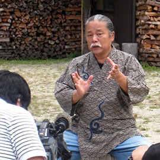

― これまでのイベント（記録） ―

|

|
近年続く縄文ブーム、その中でもいま『土偶』に注目が集まっています。
2009年に大英博物館で開催された土偶展が大成功をおさめ、山形県で発掘された土偶が今年４月新たに国宝に
指定され話題となりました。
いま土偶の美術品としての美しさが見直されています。
縄文文様がダイナミックな表現として施された縄文土器が縄文アートとして定着していますが、土偶に着目する
と、デフォルメされた体型に精緻な文様がセンス良く施され実に絶妙なバランス感覚の美しさがきわだちます。

|
 |
| 【中空土偶を再現制作する猪風来】 | 【インタビューの収録】 |
番組では『土偶』の魅力を美術の観点から解明すべくせまります。
猪風来は国宝に指定された縄文土偶４点の中のひとつ『中空土偶』（函館市著保内野遺跡出土・高さ41.5㎝）
を選んで再現。
縄文時代と同じ製法で山野から採集した粘土を精製、練り上げた縄文粘土をもちいて造形。
薄さ数ミリの中空の造形から縄文時代の高度なテクニック、土偶の細部の造形の微妙なひねりなどを確認。
また緻密な細かい文様のために、制作に必要な縄や竹管を作り、腕や頭部の欠損部分を補うために同じ形式の
土器や土偶からヒントを探します。
こうした中空土偶の再現制作・野焼き焼成の過程が撮影されています。
美術館に展示中の猪風来の現代創作土偶作品も番組内で紹介されました。
また、再現制作された中空土偶は現在、猪風来美術館にて展示しております。